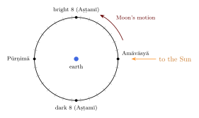

Chapter 13: The Pañcāṅga and the Indian Calendars¶
13.1 The Almanac¶
For most people in most periods of Indian history, astronomy meant the almanac. The pañcāṅga (“five limbs”) is the traditional almanac, published each year in many regional versions and languages. It gives, for each day, five elements derived from the positions of the Sun and Moon, together with the times of sunrise and sunset, the solar and lunar months, festivals and fasts, eclipses, planetary positions and astrological information. Computing it was the main practical task of the jyotiṣī, and it remains the chief living use of the siddhānta tradition (Sewell and Dikshit 1896; Yano 2003).
13.2 The Five Limbs¶
| Element | Meaning | Definition |
|---|---|---|
| tithi | lunar day | the time in which the Moon gains \(12^\circ\) on the Sun; 30 in a synodic month |
| vāra | weekday | the seven days named after the seven planets |
| nakṣatra | lunar asterism | the division of \(13^\circ 20'\) occupied by the Moon |
| yoga | “addition” | the division of \(13^\circ 20'\) reached by the sum \(\lambda_\odot + \lambda_M\) |
| karaṇa | half-tithi | the time in which the Moon gains \(6^\circ\) on the Sun; 60 in a month |
13.2.1 Tithi¶
The tithi, first defined in the Vedāṅga Jyotiṣa, is the basic unit of the religious calendar. The number of the current tithi is
The thirty tithis of a month are divided into the bright fortnight (śuklapakṣa), from new moon to full moon, and the dark fortnight (kṛṣṇapakṣa), from full moon to new moon. Each fortnight has fifteen tithis, numbered and named Pratipad (1), Dvitīyā, Tṛtīyā, Caturthī, Pañcamī, Ṣaṣṭhī, Saptamī, Aṣṭamī, Navamī, Daśamī, Ekādaśī, Dvādaśī, Trayodaśī, Caturdaśī, and Pūrṇimā (full moon, the fifteenth of the bright half) or Amāvāsyā (new moon, the fifteenth of the dark half).
Because the Moon’s speed varies, a tithi lasts between about 20 and 27 hours. The tithi current at sunrise gives its name to the civil day. When a tithi begins after one sunrise and ends before the next, no day bears its name and it is called “lost” (kṣaya); when a tithi includes two sunrises, two consecutive days bear the same name (adhika or vṛddhi). The rules for fixing festivals when this happens differ between regions and traditions, which is one reason why the same festival is sometimes celebrated on different days.

13.2.2 Vāra¶
The seven-day week came to India with Hellenistic astrology (Chapter 5). The days are named, in the same order as in the West, after the Sun (Ravivāra or Ādityavāra, Sunday), Moon (Somavāra), Mars (Maṅgalavāra), Mercury (Budhavāra), Jupiter (Guruvāra or Bṛhaspativāra), Venus (Śukravāra) and Saturn (Śanivāra). The Indian civil day runs from sunrise to sunrise. Since the siddhāntas count days from the Kali epoch, which fell on a Friday in their reckoning, the weekday of any day follows from the ahargaṇa by division by seven.
The order of the weekdays, which seems arbitrary, follows from the Hellenistic scheme of planetary hours. Arrange the seven planets in the order of their supposed distances, from the farthest: Saturn, Jupiter, Mars, Sun, Venus, Mercury, Moon. Give the first hour of a day to the Sun, the second to Venus, the third to Mercury, and so on round the list. Since \(24 = 3 \times 7 + 3\), the twenty-fifth hour, the first hour of the next day, falls to the planet three places further on, the Moon; the next day begins with Mars, and so on. The lords of the first hours give the sequence Sun, Moon, Mars, Mercury, Jupiter, Venus, Saturn, the order of the week used in India and Europe alike. The scheme is Hellenistic; the Indian texts preserve it in the rules for the “lords of the hours” (horeśas).
13.2.3 Yoga and karaṇa¶
The yoga has no simple astronomical meaning: it is the division of \(13^\circ 20'\) reached by the sum of the longitudes of the Sun and Moon. Its twenty-seven names are Viṣkambha, Prīti, Āyuṣmān, Saubhāgya, Śobhana, Atigaṇḍa, Sukarman, Dhṛti, Śūla, Gaṇḍa, Vṛddhi, Dhruva, Vyāghāta, Harṣaṇa, Vajra, Siddhi, Vyatīpāta, Varīyas, Parigha, Śiva, Siddha, Sādhya, Śubha, Śukla, Brahman, Indra and Vaidhṛti. The yogas are used almost entirely for astrological purposes.
The karaṇa is half a tithi. There are eleven karaṇas. Seven “movable” ones (Bava, Bālava, Kaulava, Taitila, Gara, Vaṇij and Viṣṭi, also called Bhadrā) repeat eight times in each month, occupying 56 of its 60 half-tithis. Four “fixed” ones occupy the remaining four: Kiṃstughna the first half of the first tithi of the bright fortnight, and Śakuni, Catuṣpada and Nāga the last three half-tithis of the dark fortnight.
13.3 Months and Years¶
13.3.1 Lunar months¶
The lunar month (cāndramāsa) runs from one new moon to the next or from one full moon to the next. In the amānta reckoning, used in most of south and western India, the month ends at new moon; in the pūrṇimānta reckoning, used in most of north India, it ends at full moon. The dark fortnight of a pūrṇimānta month therefore bears the name of the following amānta month. The twelve months, named after nakṣatras (Chapter 4), are listed in Table 13.2.
| No. | Month | Approx. | No. | Month | Approx. |
|---|---|---|---|---|---|
| 1 | Caitra | Mar–Apr | 7 | Āśvina | Sep–Oct |
| 2 | Vaiśākha | Apr–May | 8 | Kārttika | Oct–Nov |
| 3 | Jyaiṣṭha | May–Jun | 9 | Mārgaśīrṣa | Nov–Dec |
| 4 | Āṣāḍha | Jun–Jul | 10 | Pauṣa | Dec–Jan |
| 5 | Śrāvaṇa | Jul–Aug | 11 | Māgha | Jan–Feb |
| 6 | Bhādrapada | Aug–Sep | 12 | Phālguna | Feb–Mar |
13.3.2 Intercalation¶
Twelve lunar months make about 354.4 days, some eleven days less than a solar year. The calendar keeps the lunar months in step with the seasons by inserting an extra month about every two and a half to three years. The rule of the siddhānta calendar is astronomical, not a fixed cycle. A solar month is the time the Sun spends in one sign of the sidereal zodiac, and the Sun’s entry into a sign is a saṅkrānti. An amānta lunar month in which no saṅkrānti occurs is intercalary (adhika), and takes the name of the following month with the prefix adhika; it is regarded as unsuitable for many rites. Rarely, when the Sun moves fastest (around January) a lunar month may contain two saṅkrāntis; one month is then omitted (kṣaya), and an intercalary month falls in the same year. Such years are rare, traditionally said to recur at intervals of 141 or 19 years (Sewell and Dikshit 1896).
Because 235 synodic months are almost exactly nineteen years, this rule produces on average seven intercalary months in nineteen years, the same proportion as the Greek and Babylonian nineteen-year cycle. The Vedāṅga Jyotiṣa, with its two intercalations in five years, intercalated too often, which is one reason why its calendar needed periodic resetting (Chapter 3).
13.3.3 Solar calendars¶
In Tamil Nadu, Kerala, Bengal, Odisha, Assam and Punjab the civil months are solar: each begins at, or on the day after, a saṅkrānti, and the months have 29 to 32 days because the Sun’s apparent speed varies. The solar year in these calendars begins at the Sun’s entry into sidereal Aries (Meṣa saṅkrānti, now around 14 April), except in Kerala, where the Malayalam (Kollam) year begins with the entry into Leo (Siṃha) in August. The festivals of the solar new year (for example Puthandu, Vishu, Pohela Boishakh, Bohag Bihu, Baisakhi) fall in mid-April for this reason.
The solar months take their names from the signs, from the lunar months, or from local traditions. Table 13.3 gives the month names of three regional solar calendars alongside the sign that the Sun occupies.
| Sign | Tamil | Malayalam | Bengali |
|---|---|---|---|
| Meṣa (Aries) | Cittirai | Mēṭam | Baiśākh |
| Vṛṣabha (Taurus) | Vaikāci | Iṭavam | Jyaiṣṭha |
| Mithuna (Gemini) | Āṉi | Mithunam | Āṣāṛh |
| Karka (Cancer) | Āṭi | Karkkaṭakam | Śrāban |
| Siṃha (Leo) | Āvaṇi | Ciṅṅam | Bhādra |
| Kanyā (Virgo) | Puraṭṭāci | Kanni | Āśvin |
| Tulā (Libra) | Aippaci | Tulām | Kārttik |
| Vṛścika (Scorpio) | Kārttikai | Vṛścikam | Agrahāyaṇ |
| Dhanus (Sagittarius) | Mārkaḻi | Dhanu | Pauṣ |
| Makara (Capricorn) | Tai | Makaram | Māgh |
| Kumbha (Aquarius) | Māci | Kumbham | Phālgun |
| Mīna (Pisces) | Paṅkuṉi | Mīnam | Caitra |
The Tamil and Bengali years begin with the first month in the table; the Malayalam year begins with Ciṅṅam, the Sun’s entry into Siṃha.
13.3.4 The drift of the solar calendar¶
The Indian solar year is the sidereal year of the siddhāntas (about 365.2588 days in the Sūryasiddhānta), which is about twenty-four minutes longer than the tropical year of the seasons (the true sidereal year exceeds it by about twenty minutes; Section 2.4). Over many centuries the solar months have therefore moved against the seasons by more than three weeks. Makara Saṅkrānti, the Sun’s entry into sidereal Capricorn, which once coincided with the winter solstice, now falls on 14 or 15 January, more than three weeks after it; Meṣa Saṅkrānti, once close to the spring equinox, now falls around 14 April. The festivals linked to these moments have drifted with them. The reform of 1957 stopped the drift only for the new civil calendar; the religious calendar it recommended keeps the sidereal reckoning, and the drift continues (Section 13.9).
13.4 Eras¶
Many eras have been used in India; dates in inscriptions and manuscripts must be converted with care, since an era’s year may be counted as “current” or “elapsed”, and may begin in different months (Sewell and Dikshit 1896).
| Era | Epoch | Conversion and use |
|---|---|---|
| Kali | 3102 BCE | year \(\approx\) CE \(+ 3101\); astronomical texts; a computed, not historical, epoch |
| Buddhist | 544/543 BCE | year \(\approx\) CE \(+ 543\) or \(544\); Theravāda countries; traditional date of the Buddha’s final passing |
| Vīra Nirvāṇa | 527 BCE | year \(\approx\) CE \(+ 527\), beginning after Dīpāvalī; Jain; traditional date of Mahāvīra’s liberation |
| Saptarṣi (Laukika) | 3076 BCE | year \(\approx\) CE \(+ 3076\), the hundreds usually omitted; Kashmir and the hill states (Section 4.8) |
| Vikrama Saṃvat | 57 BCE | year \(\approx\) CE \(+ 57\); north and west India |
| Śaka | 78 CE | year \(\approx\) CE \(- 78\); astronomical texts; the national calendar |
| Gupta–Valabhī | 319/320 CE | Gupta and later inscriptions |
| Kollam (Malayalam) | 824/825 CE | year \(\approx\) CE \(- 825\); Kerala |
| Bengali San | 593/594 CE | Bengal; reckoned with solar years |
| Hijri | 622 CE | lunar Islamic calendar, used throughout India |
13.4.1 The sixty-year cycle¶
Besides eras, Indian calendars use a cycle of sixty named years (saṃvatsaras), beginning with Prabhava and Vibhava and ending with Akṣaya. In its astronomical form the cycle is “Jovian” (bārhaspatya): a year of the cycle is the time Jupiter takes, in mean motion, to pass through one sign, a little less than a solar year, so that five revolutions of Jupiter (about 59.3 years) make up the sixty years. In this form a name is occasionally skipped to keep the cycle in step with Jupiter. In south India, however, the sixty names are simply attached to successive solar years, without omission, and the Tamil and Telugu–Kannada years are still named in this way.
13.5 Other Calendars in India¶
The Hindu calendars were never the only ones in India. The Islamic lunar calendar (Hijri), with its twelve months of 29 or 30 days and no intercalation, has been used since the arrival of Islam for religious purposes, and the new crescent Moon marks the beginning of Ramaḍān and the festivals. The Mughal emperor Akbar introduced a solar “divine era” (tārīkh-i ilāhī, 1584), with Persian month names, dated from his accession in 1556; and the revenue year called faslī (“of the harvest”), derived from it, survived in several regions into the twentieth century. The Parsis keep the Zoroastrian calendar, in more than one reckoning; Jains reckon dates in the era of Mahāvīra’s nirvāṇa as well as in the Vikrama era; Buddhists in some regions use an era from the Buddha’s parinirvāṇa; and in 2003 the Shiromani Gurdwara Parbandhak Committee adopted for Sikh observances a solar “Nānakshāhī” calendar with an era from the birth of Guru Nānak (1469), later modified. A modern Indian almanac often gives the dates in several of these calendars side by side.
13.6 Festivals¶
Most Hindu festivals are fixed by the lunar calendar (a tithi in a given month), a few by the solar calendar. Because the lunar year is shorter than the solar, lunar festivals move by about eleven days from year to year and jump back by about a month after an intercalation. The same calendar fixes the many fasts and vows (vratas) of household religion. Some, such as the Ekādaśī fasts, are kept by men and women alike; many others, among them those undertaken for the welfare of a husband or of children, are kept mainly by women, who were thus among the most regular users of the almanac’s tithis, though hardly ever among its makers.
| Festival | Definition | Usual season |
|---|---|---|
| Rāmanavamī | Caitra bright 9 | Mar–Apr |
| Kṛṣṇa Janmāṣṭamī | Śrāvaṇa dark 8 (Bhādrapada dark 8 in pūrṇimānta) | Aug–Sep |
| Gaṇeśa Caturthī | Bhādrapada bright 4 | Aug–Sep |
| Navarātri | Āśvina bright 1–9 | Sep–Oct |
| Dīpāvalī | Āśvina new moon (Kārttika dark 15 in pūrṇimānta) | Oct–Nov |
| Mahāśivarātri | Māgha dark 14 (Phālguna dark 14 in pūrṇimānta) | Feb–Mar |
| Holī | Phālguna full moon | Feb–Mar |
| Makara Saṅkrānti | Sun’s entry into sidereal Capricorn (solar) | 14–15 Jan |
| Meṣa Saṅkrānti | Sun’s entry into sidereal Aries (solar) | 13–15 Apr |
13.6.1 Festivals fixed by Jupiter¶
A few of the largest gatherings in India are fixed not by the Sun and Moon alone but by Jupiter, whose passage through the twelve sidereal signs takes about a year each and the whole zodiac about twelve years (11.86 years in mean motion). The same slow motion underlies the Jovian sixty-year cycle described above.
The best known are the great bathing fairs called Kumbha Melā, held in rotation at four places, each roughly once in twelve years: Haridvāra on the Gaṅgā, Prayāga at the confluence of the Gaṅgā and Yamunā, Ujjayinī on the Kṣiprā, and Nāsik and Tryambak on the Godāvarī. Their times are defined by the signs occupied by Jupiter and the Sun. In the usual statement of the rules, the Haridvāra fair falls when Jupiter is in Kumbha (Aquarius) and the Sun enters Meṣa; the Prayāga fair when Jupiter is in Vṛṣabha and the Sun in Makara, in the month of Māgha; the Nāsik fair when Jupiter is in Siṃha, which gives it its other name, Siṃhastha; and the Ujjayinī fair when Jupiter is in Siṃha and the Sun in Meṣa. The name and the scheme of four sites are better documented in the last few centuries than earlier; the annual Māgha fair at Prayāga, for example, is much older than its designation as a Kumbha, which historians have traced to the nineteenth century (Maclean 2008). The astronomy, however, is straightforward.
Because Jupiter’s period is a little less than twelve years, a festival held every twelve years slowly falls behind the planet. In each twelve-year interval Jupiter goes \(360^\circ \times 12/11.86 \approx 364.2^\circ\), about \(4^\circ\) more than a full circuit; after seven or eight such intervals, roughly eighty-five years, the accumulated lead reaches a whole sign, and the condition recurs after only eleven years. This is why the Haridvāra fair was held in 2010 and again in 2021.
In the south the same principle governs the Puṣkaram festivals (Telugu Puṣkaralu), in which each of twelve sacred rivers is honoured for twelve days when Jupiter enters the sign assigned to it: the Godāvarī when Jupiter enters Siṃha, the Kṛṣṇā when it enters Kanyā, and the Kāverī when it enters Tulā, as in the successive years 2015, 2016 and 2017. Since the moment at which Jupiter enters a sign depends on the almanac’s parameters and on its ayanāṃśa, traditional and dṛk almanacs (Section 13.7) can disagree about the dates of these festivals by days or weeks, a disagreement that has practical consequences when millions of pilgrims and the administration of their gathering depend on it.
13.7 Computing the Almanac¶
13.7.1 Traditional methods¶
A traditional almanac-maker computed the true longitudes of the Sun and Moon at sunrise each day, using a siddhānta or, more often, a handbook or table (Chapter 12), and from them found the five elements and the moments at which each changed. The elements follow simply from the two longitudes:
-
tithi \(= \lfloor(\lambda_M - \lambda_\odot)/12^\circ\rfloor + 1\);
-
nakṣatra \(= \lfloor\lambda_M/13^\circ 20'\rfloor + 1\);
-
yoga \(= \lfloor(\lambda_\odot + \lambda_M)/13^\circ 20'\rfloor + 1\) (modulo 27);
-
karaṇa: the half-tithi \(\lfloor(\lambda_M - \lambda_\odot)/6^\circ\rfloor + 1\), mapped onto the eleven names;
-
vāra: from the day count modulo 7.
The hard part is the true longitude of the Moon, whose errors translate directly into errors in the times of tithis and nakṣatras. In south India the vākya tables made this easy (Chapter 10).
13.7.2 The printed almanac¶
A printed almanac of the twentieth or twenty-first century usually opens with the name of the year in the sixty-year cycle and in one or more eras, a list of the year’s festivals and eclipses, and astrological forecasts for the year. The body of the almanac then gives, for each lunar fortnight or month, a table with one line per day. A typical line gives the date in the lunar calendar (month, fortnight and tithi), the weekday, the time at which the tithi ends, the nakṣatra and the time at which it ends, the yoga and karaṇa with their ending times, the times of sunrise and sunset for the place for which the almanac is computed, the solar date, and the corresponding Gregorian date. Times are traditionally given in ghaṭikās and palas counted from sunrise, and in modern almanacs also in hours and minutes of standard time. Further columns or pages give the daily positions of the planets, the times at which the ascendant enters each sign, the auspicious and inauspicious periods of the day, and the festivals, fasts and religious observances of each day. Because the times depend on the place, almanacs are computed for particular cities, and the user is instructed how to correct them for other places.
13.7.3 Finding an intercalary month: a schematic example¶
The rule that an amānta month containing no saṅkrānti is intercalary can be illustrated with a schematic sequence of events (the dates are invented for illustration). Suppose that the Sun enters Mithuna (Gemini) on 15 May and Karka (Cancer) on 15 June, and that new moons fall on 10 May, 8 June and 7 July. The lunar month from 10 May to 8 June contains the saṅkrānti of 15 May, and the month from 8 June to 7 July contains that of 15 June; both are ordinary months. Now suppose instead that the new moons fall on 16 May and 14 June, while the Sun enters Mithuna on 15 May and Karka on 15 June. The lunar month from 16 May to 14 June then contains no saṅkrānti at all: the Sun is in Mithuna throughout. That month is intercalary, and it takes the name of the month that follows, with the prefix adhika. Since the solar months are about 30.4 days long and the lunar months about 29.5, such a situation arises roughly every 32 or 33 months.
13.7.4 Dṛk and traditional almanacs¶
In the nineteenth century, as the discrepancies between traditional almanacs and the sky (for example in the times of eclipses) became widely known, reformers in western India and elsewhere began to compute almanacs from modern European astronomical tables while retaining the traditional calendar framework. Such almanacs are called dṛk or dṛggaṇita (“observation-based”) almanacs, in contrast to the traditional ones computed from the Sūryasiddhānta, the Grahalāghava or the vākyas. The debate between the two kinds of almanac, which can differ by hours in the time of a tithi and therefore sometimes by a day in the date of a festival, has continued ever since. Today almost all dṛk almanacs use modern ephemerides with an ayanāṃśa to obtain sidereal longitudes (Chapter 4).
13.7.5 Astrological content of the almanac¶
Almanacs have always carried astrological information along with the astronomical, and today this part is often the most consulted. Besides the auspicious times (muhūrtas) for marriages, journeys and other undertakings, many almanacs mark for each day periods regarded as inauspicious. In south India the best known is rāhukāla, one-eighth of the daytime, whose place in the day is fixed by the weekday; others are yamagaṇḍa and gulikakāla. These periods are astrological conventions (Chapter 15), not astronomical phenomena: rāhukāla has nothing to do with the position of the lunar node called Rāhu. Their observance is a matter of custom and belief.
13.8 A Regional Tradition: The Tamil Almanac¶
The regional almanacs of India are not local copies of a single Sanskrit model. Each has its own language, conventions, festivals and history of computation, and the Tamil almanac (pañcāṅkam) shows this especially clearly.
Nakṣatras in Tamil.
The asterisms have been part of Tamil culture since the classical (Caṅkam) poetry, which names several of them and mentions festivals tied to them, apparently including the festival of lamps in the month of Kārttikai. Their Tamil names are partly adapted from Sanskrit (Kārttikai for Kṛttikā, Rōkiṇi, Pūcam for Puṣya, Makam for Maghā, Cittirai, Cuvāti, Vicākam, Mūlam) and partly distinctively Tamil: Tiruvātirai for Ārdrā and Tiruvōṇam for Śravaṇa, with the honorific prefix tiru; Āyilyam for Āśleṣā, Kēṭṭai for Jyeṣṭhā, Aviṭṭam for Dhaniṣṭhā and Catayam for Śatabhiṣaj; and paired forms such as Pūram and Uttiram for the two Phalgunīs and Pūrāṭam and Uttirāṭam for the two Āṣāḍhās.
Festivals by nakṣatra and solar month.
A characteristic southern pattern is to fix a festival not by a tithi in a lunar month, as in most of the north, but by the day on which the Moon is in a given nakṣatra within a given solar month (Table 13.3). Thus Kārttikai Tīpam falls when the Moon is in Kārttikai during the solar month Kārttikai, Tai Pūcam on the day of Pūcam in Tai, Paṅkuṉi Uttiram on the day of Uttiram in Paṅkuṉi, and the Tiruvātirai festival of Śiva in Mārkaḻi; in Kerala, Ōṇam is the day of Tiruvōṇam in the solar month Ciṅṅam. Birthdays, too, are traditionally kept on the birth nakṣatra (Chapter 4). Such festivals depend on the Moon’s true position and the Sun’s entry into the signs, and so on exactly the computations described in this chapter.
Vākya and tirukkaṇitam.
Tamil almanac-makers kept the vākya system (Chapter 10) longer than anyone else. Its main handbook, the Vākyakaraṇa, was probably composed in the Tamil country around the fourteenth century, and its commentator Sundararāja, in the early sixteenth century, exchanged questions and answers with the Kerala astronomer Nīlakaṇṭha (Pingree 1981; Sarma 1972). Two kinds of Tamil almanac are published today: the vākya pañcāṅkam, computed by the traditional sentences and still followed by many temples, and the tirukkaṇita pañcāṅkam (from Sanskrit dṛggaṇita), computed from modern ephemerides. Like the dṛk and traditional almanacs elsewhere, they can differ by hours in the ending time of a tithi or nakṣatra, and occasionally by a day in the date of a festival.
Calculation without writing.
Tamil calendar-makers were known for computing with counters laid out on the ground and with memorised tables rather than written arithmetic. The French astronomer Le Gentil, during his stay at Pondicherry in 1768–69, had the computation of a lunar eclipse demonstrated to him in this way and published the procedure; Otto Neugebauer later analysed his account and showed how the method worked (Neugebauer 1952). Some decades later John Warren recorded the same kind of computation, made with shells laid out on the ground, in his Kala Sankalita (Section 16.4.4). The episode is a reminder that the living practice of Indian astronomy was largely oral and manual, carried by people whose names rarely entered the written record. In the Tamil country these included not only Brahmin specialists but also hereditary astrologers of other communities, such as the Vaḷḷuvar.
13.9 The Reform of 1957¶
In 1952 the Government of India appointed a Calendar Reform Committee, chaired by the astrophysicist Meghnad Saha, to examine the more than thirty calendars then in use and to propose a unified one. Its report (1955) recommended (Calendar Reform Committee 1955):
-
for civil use, a national calendar based on the tropical solar year, with the Śaka era, in which the year begins on 22 March (21 March in leap years) and the months have fixed lengths of 30 or 31 days, in step with the Gregorian calendar;
-
for religious use, the continued use of lunar and solar months, but computed from accurate modern data, with the sidereal longitudes obtained by a single, fixed definition of the ayanāṃśa (the Citrā-pakṣa value, with Spica at \(180^\circ\)).
The two recommendations had different consequences for the seasons. The civil calendar is tropical and stays in step with them. The religious calendar remained sidereal: since the ayanāṃśa grows with precession, the saṅkrāntis and the solar months, and with them festivals such as Makara Saṅkrānti, continue to move later in the seasonal year, by about one day in seventy years. Only the civil calendar was reformed in this respect.
The national calendar came into official use on 22 March 1957 (1 Caitra 1879 Śaka) alongside the Gregorian calendar. It is used in the Gazette of India and in some official documents, but has not displaced either the Gregorian calendar in civil life or the regional calendars in religious life. The Positional Astronomy Centre in Kolkata, part of the India Meteorological Department, publishes an annual Rāṣṭrīya Pañcāṅga (national almanac) on the principles recommended by the Committee. The great majority of almanacs, however, are still published privately, by traditional families and publishing houses, according to regional traditions and choices of school.
Further Reading¶
Sewell and Dikshit (1896) remains the standard reference for converting Indian dates and explains the calendar rules in detail. Calendar Reform Committee (1955) is the report of the Calendar Reform Committee. Yano (2003) is a short modern account. Neugebauer (1952) analyses an eighteenth-century account of Tamil eclipse computation.